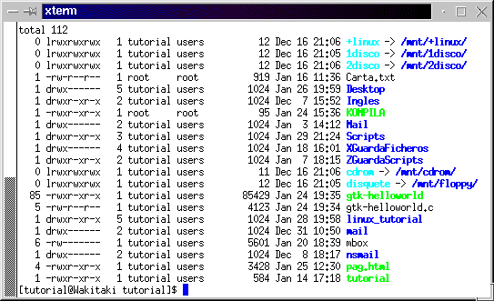

Una vez visto los capítulos anteriores ahora veremos como
gestionar correctamente los ficheros, deberás saber que:
Para ver los permisos de los ficheros, puedes escribir bien
vdir
ó
ls -la
y veríamos algo así:
[Atributos] [Dueño] [Grupo]
[Tamaño][Fecha creación][Nombre del fichero]
---------------------------------------------------------
-rw-r--r-- carlos users
1024 Dic 21 20:30 carta.txt
---------------------------------------------------------
Que de forma resumida, expondremos así:
-rw-r--r-- carlos users carta.txt
O como puedes apreciar en la imagen:

Los signos que aparecen al comienzo a la izquierda de la pantalla son
los atributos. Para entenderlos hay que tomarlos de 3 en 3, menos el guión
del comienzo, que indica si es fichero, directorio o enlace poniendo:
Así, ahora utilizando por ejemplo un script que se llamará: "miscript"
-rwxr-xr-- carlos users miscript
tenemos que carlos users nos dicen el dueño del fichero
y el grupo del mismo, respectivamente. Carlos tiene permisos de lectura,
escritura y ejecución (para poder borrarlo, por ejemplo) (-rwxr-xr--)
.
El
grupo de Carlos, users, tiene permisos de lectura y ejecución,
(-rwxr-xr--) y el resto
de usuarios de sólo lectura (-rwxr-xr--
).
chown - Cambia de dueño al fichero.
chgrp - Cambia de grupo a un fichero.
chmod - Cambia los atributos a un fichero.
Al crear un fichero, por defecto, será del dueño que lo crea, osea, si estoy como javier, y escribo: joe carta.txt, la carta creada será de javier, con los atributos propios del mismo, pero si estoy como root, y creo la misma carta, la carta ahora será de root.
Antes de empezar a explicarte como cambiar los atributos a un fichero,
debes saber algo bastante lógico:
usar "a", modificará todos los atributos
También puede utilizarse chmod con números OCTALES, que realizarán las mismas funciones que las letras, pero no serán explicados aquí.
Para cambiar de dueño a un fichero, deberás
usar el comando
chown, o bien utilizar mc,
que es más fácil, siempre y cuando tenga los atributos que
permitan ser cambiados.
Ahora "EsteFichero" pertenecerá a javier.
Si quieres cambiar de grupo al fichero "EsteFichero"
Y si desde el princio hubieras querido cambiar de usuario y de grupo
haber escrito:
Para más información escribe:
man chown
Mire la sección Gestión AVANZADA de ficheros.
Escribe
man chmod
y
man chattr